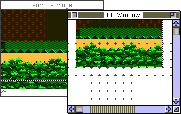

★Graphic Tools Guide
★MAP/SCREENエディタユーザーズマニュアル
★Graphic Tools Guide
★MAP/SCREENエディタユーザーズマニュアル
▲
戻る｜
進む▼
MAP/SCREENエディタユーザーズマニュアル
3.基本操作
■編集作業をはじめる前に
- 『Map Editor/Screen Editor』における設定情報には、編集作業が進行してしまうと変更のできない項目があります。
新規にマップを作成する場合は、起動時に確認される設定情報を充分に確認してから作業を進めてください。
※カラーモード、パターンネームテーブルに関する詳細はハードウェアマニュアルのVDP２に関する資料を参照してください。
■キャラクタの登録手順
- ファイルメニューの「インポート」を選択してキャラクタ登録用のイメージファイルを読み込み、イメージウインドウを開きます。
次に、長方形選択ツール・選択ツールでイメージウインドウ上の範囲を指定しCGウィンドウへコピー＆ペーストすることにより、キャラクタとして登録されます。

- また、他のアプリケーション上でコピーされたイメージデータを直接CGウインドウへ、ペーストすることも可能です。
▲
戻る｜
進む▼
★Graphic Tools Guide
★MAP/SCREENエディタユーザーズマニュアル
Copyright SEGA ENTERPRISES, LTD., 1997